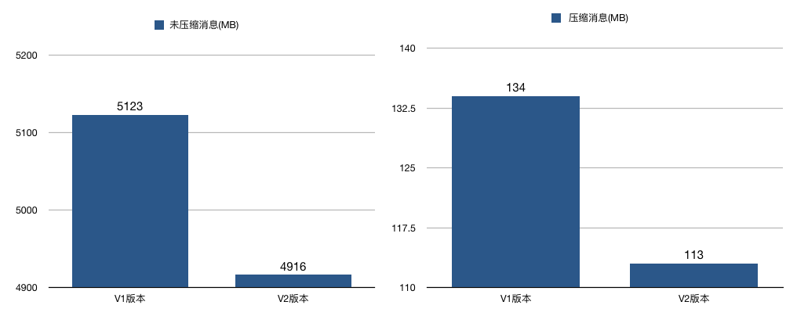
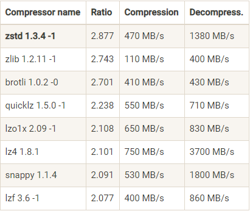
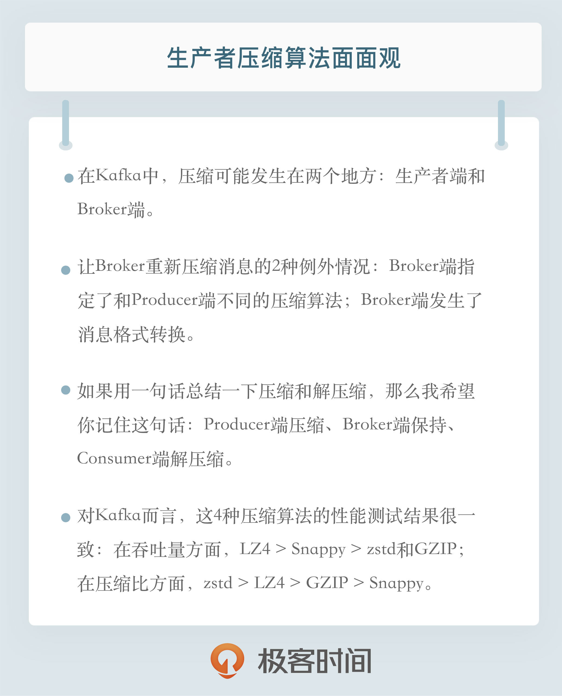

- 00 开篇词 为什么要学习Kafka？.md.html
- 01 消息引擎系统ABC.md.html
- 02 一篇文章带你快速搞定Kafka术语.md.html
- 03 Kafka只是消息引擎系统吗？.md.html
- 04 我应该选择哪种Kafka？.md.html
- 05 聊聊Kafka的版本号.md.html
- 06 Kafka线上集群部署方案怎么做？.md.html
- 07 最最最重要的集群参数配置（上）.md.html
- 08 最最最重要的集群参数配置（下）.md.html
- 09 生产者消息分区机制原理剖析.md.html
- 10 生产者压缩算法面面观.md.html
- 11 无消息丢失配置怎么实现？.md.html
- 12 客户端都有哪些不常见但是很高级的功能？.md.html
- 13 Java生产者是如何管理TCP连接的？.md.html
- 14 幂等生产者和事务生产者是一回事吗？.md.html
- 15 消费者组到底是什么？.md.html
- 16 揭开神秘的“位移主题”面纱.md.html
- 17 消费者组重平衡能避免吗？.md.html
- 18 Kafka中位移提交那些事儿.md.html
- 19 CommitFailedException异常怎么处理？.md.html
- 20 多线程开发消费者实例.md.html
- 21 Java 消费者是如何管理TCP连接的_.md.html
- 22 消费者组消费进度监控都怎么实现？.md.html
- 23 Kafka副本机制详解.md.html
- 24 请求是怎么被处理的？.md.html
- 25 消费者组重平衡全流程解析.md.html
- 26 你一定不能错过的Kafka控制器.md.html
- 27 关于高水位和Leader Epoch的讨论.md.html
- 28 主题管理知多少_.md.html
- 29 Kafka动态配置了解下？.md.html
- 30 怎么重设消费者组位移？.md.html
- 31 常见工具脚本大汇总.md.html
- 32 KafkaAdminClient：Kafka的运维利器.md.html
- 33 Kafka认证机制用哪家？.md.html
- 34 云环境下的授权该怎么做？.md.html
- 35 跨集群备份解决方案MirrorMaker.md.html
- 36 你应该怎么监控Kafka？.md.html
- 37 主流的Kafka监控框架.md.html
- 38 调优Kafka，你做到了吗？.md.html
- 39 从0搭建基于Kafka的企业级实时日志流处理平台.md.html
- 40 Kafka Streams与其他流处理平台的差异在哪里？.md.html
- 41 Kafka Streams DSL开发实例.md.html
- 42 Kafka Streams在金融领域的应用.md.html
- 加餐 搭建开发环境、阅读源码方法、经典学习资料大揭秘.md.html
- 用户故事 黄云：行百里者半九十.md.html
- 结束语 以梦为马，莫负韶华！.md.html
- 捐赠
10 生产者压缩算法面面观
你好，我是胡夕。今天我要和你分享的内容是：生产者压缩算法面面观。
说起压缩（compression），我相信你一定不会感到陌生。它秉承了用时间去换空间的经典trade-off思想，具体来说就是用CPU时间去换磁盘空间或网络I/O传输量，希望以较小的CPU开销带来更少的磁盘占用或更少的网络I/O传输。在Kafka中，压缩也是用来做这件事的。今天我就来跟你分享一下Kafka中压缩的那些事儿。
怎么压缩？
Kafka是如何压缩消息的呢？要弄清楚这个问题，就要从Kafka的消息格式说起了。目前Kafka共有两大类消息格式，社区分别称之为V1版本和V2版本。V2版本是Kafka 0.11.0.0中正式引入的。
不论是哪个版本，Kafka的消息层次都分为两层：消息集合（message set）以及消息（message）。一个消息集合中包含若干条日志项（record item），而日志项才是真正封装消息的地方。Kafka底层的消息日志由一系列消息集合日志项组成。Kafka通常不会直接操作具体的一条条消息，它总是在消息集合这个层面上进行写入操作。
那么社区引入V2版本的目的是什么呢？V2版本主要是针对V1版本的一些弊端做了修正，和我们今天讨论的主题相关的修正有哪些呢？先介绍一个，就是把消息的公共部分抽取出来放到外层消息集合里面，这样就不用每条消息都保存这些信息了。
我来举个例子。原来在V1版本中，每条消息都需要执行CRC校验，但有些情况下消息的CRC值是会发生变化的。比如在Broker端可能会对消息时间戳字段进行更新，那么重新计算之后的CRC值也会相应更新；再比如Broker端在执行消息格式转换时（主要是为了兼容老版本客户端程序），也会带来CRC值的变化。鉴于这些情况，再对每条消息都执行CRC校验就有点没必要了，不仅浪费空间还耽误CPU时间，因此在V2版本中，消息的CRC校验工作就被移到了消息集合这一层。
V2版本还有一个和压缩息息相关的改进，就是保存压缩消息的方法发生了变化。之前V1版本中保存压缩消息的方法是把多条消息进行压缩然后保存到外层消息的消息体字段中；而V2版本的做法是对整个消息集合进行压缩。显然后者应该比前者有更好的压缩效果。
我对两个版本分别做了一个简单的测试，结果显示，在相同条件下，不论是否启用压缩，V2版本都比V1版本节省磁盘空间。当启用压缩时，这种节省空间的效果更加明显，就像下面这两张图展示的那样：

何时压缩？
在Kafka中，压缩可能发生在两个地方：生产者端和Broker端。
生产者程序中配置compression.type参数即表示启用指定类型的压缩算法。比如下面这段程序代码展示了如何构建一个开启GZIP的Producer对象：
Properties props = new Properties();
props.put("bootstrap.servers", "localhost:9092");
props.put("acks", "all");
props.put("key.serializer", "org.apache.kafka.common.serialization.StringSerializer");
props.put("value.serializer", "org.apache.kafka.common.serialization.StringSerializer");
// 开启GZIP压缩
props.put("compression.type", "gzip");
Producer<String, String> producer = new KafkaProducer<>(props);
这里比较关键的代码行是props.put(“compression.type”, “gzip”)，它表明该Producer的压缩算法使用的是GZIP。这样Producer启动后生产的每个消息集合都是经GZIP压缩过的，故而能很好地节省网络传输带宽以及Kafka Broker端的磁盘占用。
在生产者端启用压缩是很自然的想法，那为什么我说在Broker端也可能进行压缩呢？其实大部分情况下Broker从Producer端接收到消息后仅仅是原封不动地保存而不会对其进行任何修改，但这里的“大部分情况”也是要满足一定条件的。有两种例外情况就可能让Broker重新压缩消息。
情况一：Broker端指定了和Producer端不同的压缩算法。
先看一个例子。想象这样一个对话。
Producer说：“我要使用GZIP进行压缩。”
Broker说：“不好意思，我这边接收的消息必须使用Snappy算法进行压缩。”
你看，这种情况下Broker接收到GZIP压缩消息后，只能解压缩然后使用Snappy重新压缩一遍。如果你翻开Kafka官网，你会发现Broker端也有一个参数叫compression.type，和上面那个例子中的同名。但是这个参数的默认值是producer，这表示Broker端会“尊重”Producer端使用的压缩算法。可一旦你在Broker端设置了不同的compression.type值，就一定要小心了，因为可能会发生预料之外的压缩/解压缩操作，通常表现为Broker端CPU使用率飙升。
情况二：Broker端发生了消息格式转换。
所谓的消息格式转换主要是为了兼容老版本的消费者程序。还记得之前说过的V1、V2版本吧？在一个生产环境中，Kafka集群中同时保存多种版本的消息格式非常常见。为了兼容老版本的格式，Broker端会对新版本消息执行向老版本格式的转换。这个过程中会涉及消息的解压缩和重新压缩。一般情况下这种消息格式转换对性能是有很大影响的，除了这里的压缩之外，它还让Kafka丧失了引以为豪的Zero Copy特性。
所谓“Zero Copy”就是“零拷贝”，我在专栏第6期提到过，说的是当数据在磁盘和网络进行传输时避免昂贵的内核态数据拷贝，从而实现快速的数据传输。因此如果Kafka享受不到这个特性的话，性能必然有所损失，所以尽量保证消息格式的统一吧，这样不仅可以避免不必要的解压缩/重新压缩，对提升其他方面的性能也大有裨益。如果有兴趣你可以深入地了解下Zero Copy的原理。
何时解压缩？
有压缩必有解压缩！通常来说解压缩发生在消费者程序中，也就是说Producer发送压缩消息到Broker后，Broker照单全收并原样保存起来。当Consumer程序请求这部分消息时，Broker依然原样发送出去，当消息到达Consumer端后，由Consumer自行解压缩还原成之前的消息。
那么现在问题来了，Consumer怎么知道这些消息是用何种压缩算法压缩的呢？其实答案就在消息中。Kafka会将启用了哪种压缩算法封装进消息集合中，这样当Consumer读取到消息集合时，它自然就知道了这些消息使用的是哪种压缩算法。如果用一句话总结一下压缩和解压缩，那么我希望你记住这句话：Producer端压缩、Broker端保持、Consumer端解压缩。
除了在Consumer端解压缩，Broker端也会进行解压缩。注意了，这和前面提到消息格式转换时发生的解压缩是不同的场景。每个压缩过的消息集合在Broker端写入时都要发生解压缩操作，目的就是为了对消息执行各种验证。我们必须承认这种解压缩对Broker端性能是有一定影响的，特别是对CPU的使用率而言。
事实上，最近国内京东的小伙伴们刚刚向社区提出了一个bugfix，建议去掉因为做消息校验而引入的解压缩。据他们称，去掉了解压缩之后，Broker端的CPU使用率至少降低了50%。不过有些遗憾的是，目前社区并未采纳这个建议，原因就是这种消息校验是非常重要的，不可盲目去之。毕竟先把事情做对是最重要的，在做对的基础上，再考虑把事情做好做快。针对这个使用场景，你也可以思考一下，是否有一个两全其美的方案，既能避免消息解压缩也能对消息执行校验。
各种压缩算法对比
那么我们来谈谈压缩算法。这可是重头戏！之前说了这么多，我们还是要比较一下各个压缩算法的优劣，这样我们才能有针对性地配置适合我们业务的压缩策略。
在Kafka 2.1.0版本之前，Kafka支持3种压缩算法：GZIP、Snappy和LZ4。从2.1.0开始，Kafka正式支持Zstandard算法（简写为zstd）。它是Facebook开源的一个压缩算法，能够提供超高的压缩比（compression ratio）。
对了，看一个压缩算法的优劣，有两个重要的指标：一个指标是压缩比，原先占100份空间的东西经压缩之后变成了占20份空间，那么压缩比就是5，显然压缩比越高越好；另一个指标就是压缩/解压缩吞吐量，比如每秒能压缩或解压缩多少MB的数据。同样地，吞吐量也是越高越好。
下面这张表是Facebook Zstandard官网提供的一份压缩算法benchmark比较结果：

从表中我们可以发现zstd算法有着最高的压缩比，而在吞吐量上的表现只能说中规中矩。反观LZ4算法，它在吞吐量方面则是毫无疑问的执牛耳者。当然对于表格中数据的权威性我不做过多解读，只想用它来说明一下当前各种压缩算法的大致表现。
在实际使用中，GZIP、Snappy、LZ4甚至是zstd的表现各有千秋。但对于Kafka而言，它们的性能测试结果却出奇得一致，即在吞吐量方面：LZ4 > Snappy > zstd和GZIP；而在压缩比方面，zstd > LZ4 > GZIP > Snappy。具体到物理资源，使用Snappy算法占用的网络带宽最多，zstd最少，这是合理的，毕竟zstd就是要提供超高的压缩比；在CPU使用率方面，各个算法表现得差不多，只是在压缩时Snappy算法使用的CPU较多一些，而在解压缩时GZIP算法则可能使用更多的CPU。
最佳实践
了解了这些算法对比，我们就能根据自身的实际情况有针对性地启用合适的压缩算法。
首先来说压缩。何时启用压缩是比较合适的时机呢？
你现在已经知道Producer端完成的压缩，那么启用压缩的一个条件就是Producer程序运行机器上的CPU资源要很充足。如果Producer运行机器本身CPU已经消耗殆尽了，那么启用消息压缩无疑是雪上加霜，只会适得其反。
除了CPU资源充足这一条件，如果你的环境中带宽资源有限，那么我也建议你开启压缩。事实上我见过的很多Kafka生产环境都遭遇过带宽被打满的情况。这年头，带宽可是比CPU和内存还要珍贵的稀缺资源，毕竟万兆网络还不是普通公司的标配，因此千兆网络中Kafka集群带宽资源耗尽这件事情就特别容易出现。如果你的客户端机器CPU资源有很多富余，我强烈建议你开启zstd压缩，这样能极大地节省网络资源消耗。
其次说说解压缩。其实也没什么可说的。一旦启用压缩，解压缩是不可避免的事情。这里只想强调一点：我们对不可抗拒的解压缩无能为力，但至少能规避掉那些意料之外的解压缩。就像我前面说的，因为要兼容老版本而引入的解压缩操作就属于这类。有条件的话尽量保证不要出现消息格式转换的情况。
小结
总结一下今天分享的内容：我们主要讨论了Kafka压缩的各个方面，包括Kafka是如何对消息进行压缩的、何时进行压缩及解压缩，还对比了目前Kafka支持的几个压缩算法，最后我给出了工程化的最佳实践。分享这么多内容，我就只有一个目的：就是希望你能根据自身的实际情况恰当地选择合适的Kafka压缩算法，以求实现最大的资源利用率。

开放讨论
最后给出一道作业题，请花时间思考一下：前面我们提到了Broker要对压缩消息集合执行解压缩操作，然后逐条对消息进行校验，有人提出了一个方案：把这种消息校验移到Producer端来做，Broker直接读取校验结果即可，这样就可以避免在Broker端执行解压缩操作。你认同这种方案吗？
欢迎写下你的思考和答案，我们一起讨论。如果你觉得有所收获，也欢迎把文章分享给你的朋友。
© 2019 - 2023 Liangliang Lee. Powered by gin and hexo-theme-book.